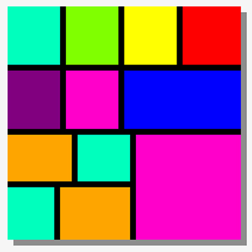

Websites for Quarter 4
Abstract Art
For this assignment, we were required to make abstract art with our CSS skills.
Pop Art

For this assignment, we were required to make pop art in Photoshop, and then base a website around it.
Travel Agency Newsletter
For this assignment, we were required to make a newsletter for a travel agency that we designed.
Ansel Adams

For this assignment, we were required to recreate a website about the photographer, Ansel Adams.
My name is Cole Martin and I'm a student at St. Joseph's Catholic School. I am current a Sophomore and I am very involved with extra curricular activites. Outside of school, I chill by the pool and work. I am currently employed at TopGolf Greenville.